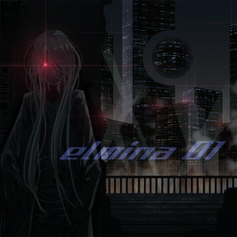
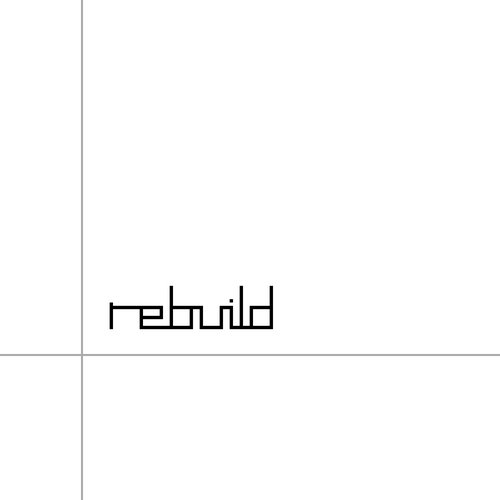

- elmina 01
elmina 01
elmina コンピレーションアルバム
- rebuild
rebuild
ソロEP
- tatsuta compilation 2
tatsuta compilation 2

tatsuta recordings コンピレーションアルバム
シンセサウンドをメインとしたエレクトロニックな楽曲を得意とし、Web上での公開、イベントでのCD頒布などを行っている。
その傍ら、ボーカル編集やミックス・マスタリングを担うこともある。
上記の音楽活動を通して、ウェブサイト・特設サイト制作を経験する。
その後も複数のコーポレートサイト制作やWEBサービスのフロントエンド開発などに携わる。
シンプル・フラットなデザインを得意とし、レスポンシブ対応はもちろんのこと、文書としてのHTMLを意識したコードスタイルにもこだわっている。
elmina コンピレーションアルバム
ソロEP
tatsuta recordings コンピレーションアルバム